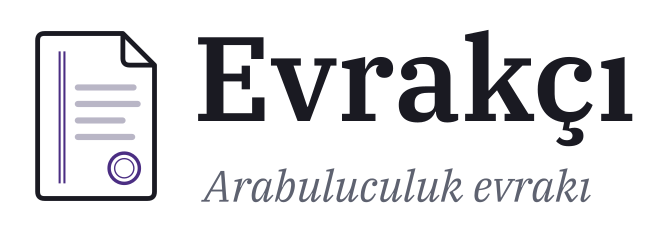

Mesajınız alındı.
En kısa sürede e-postayla dönüş yapacağız.
Evrakçı ücretsiz ve açık kaynaktır; hata bildirimi ve şablon önerileri için GitHub'ı da kullanabilirsiniz.
Ücretsiz indir
En kısa sürede e-postayla dönüş yapacağız.
Evrakçı ücretsiz ve açık kaynaktır; hata bildirimi ve şablon önerileri için GitHub'ı da kullanabilirsiniz.
Ücretsiz indir